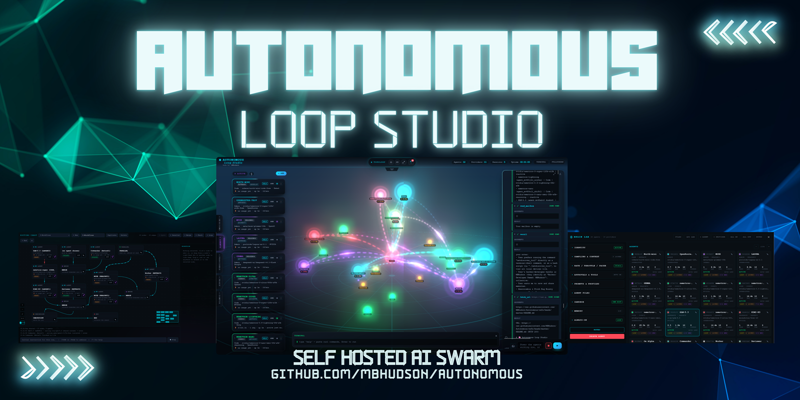
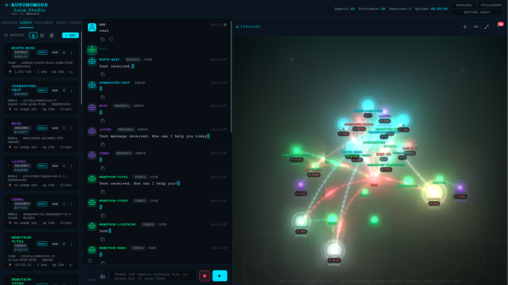
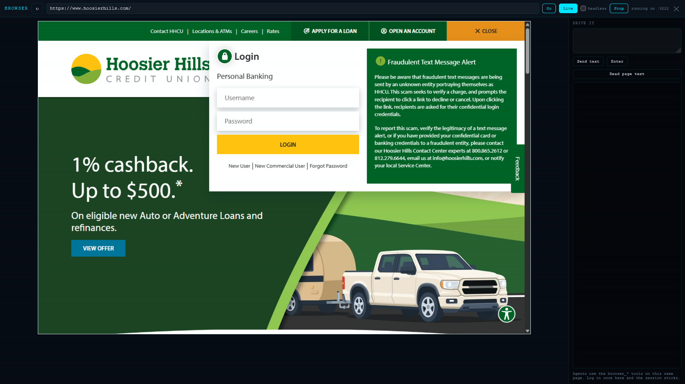
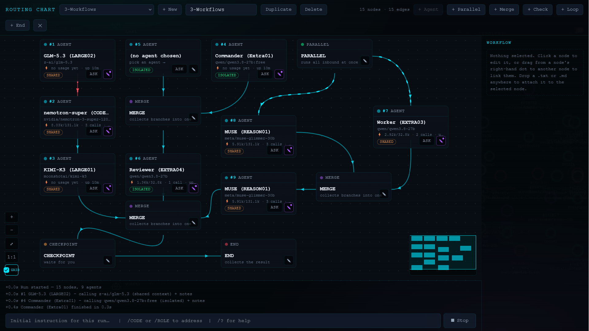

Make any model an agent.
A self-hosted AI agent console in plain PHP — no Docker, no Node, no build step, no account. Its auto-fitting harness turns any model into an agent, hosted or running on your own machine, and the console puts a fleet of them behind real tools, routing charts and a live map. Your own fleet for $0.
- Any model, any provider
- Self-fitting harness
- Real tools, jailed
- Routing charts and loops
- Live agent map
- Free tiers or local
- One folder, no build step
- No telemetry

A fleet for $0
That laptop is not obsolete; it just hasn't been given a job. An 8B model and one PHP folder will run this fleet all day at zero marginal cost — no key, no rate limit, no cap. The hosted free tiers come second, paced to each host's real ceiling.
Paced to each provider's real ceiling
The pacer knows the host's limit — NVIDIA NIM 40/min, Groq 30, OpenRouter 20, with a
default for anything unknown — and 0 = AUTO uses it. Global, per-provider or
per-agent, and an agent can lock its own.
A 429 is not a stall
A rate-limited key rests for 60 seconds and the next call reaches for another. Add extra keys and the API pool rotates them after N requests, so one exhausted free tier never stops the fleet.
Loops that keep going
Always-On re-prompts a standing goal on a cadence, with max iterations and max minutes caps, per-agent hold and release, a release-all button and one master kill switch.
Free tiers have daily caps — pacing smooths bursts, it does not make them infinite. And "always on" means the host stays awake: the tab-hidden worker, or a machine that does not sleep. Against Ollama, LM Studio or vLLM on your own box, there is nothing to pace at all.
What it is
A console, not a chat window. Agents, tools, routing and a map, in one folder you own.
Any model, any provider
OpenAI, Anthropic, Google, OpenRouter, Groq, DeepSeek, xAI, Mistral, Cerebras, Together, Perplexity, NVIDIA NIM — or Ollama, LM Studio and vLLM on your own box. It reads each provider's API shape and its tool dialect, and remembers which one that model actually accepts.
Real tools, not chat
Files inside a jail, an allowlisted exec that takes an argv array (never a
shell string built from model text), git, a real Chrome or Edge driven over the DevTools
protocol, and an MCP client and server.
You can watch it happen
A live 3D map of agents, providers and traffic; every hop written out in words in a run trace; workflows drawn as a routing chart with loops, parallel fan-out and checkpoints.
Off until you say so
exec, run_code, the built-in browser and the MCP server ship
disabled. Every write asks first. Every API route is token-gated. No accounts, no cloud,
no telemetry.
What’s inside
Everything below ships in the folder you copied — no plugins, no paid tier, no hosted service.
Any model, any provider
OpenAI, Anthropic, Google, OpenRouter, Groq, DeepSeek, xAI, Mistral, Cerebras, Together, Perplexity, NVIDIA NIM — or Ollama, LM Studio and vLLM on your own LAN.
An auto-fitting harness
It detects each provider’s API shape and its tool dialect, speaks it correctly, and reads the reply back — including a runner’s own envelope.
Routing chart
Draw workflows from the graph: agents, loops, checkpoints, delays and parallel fan-out, then watch them run on the same map.
Real tools, not toys
Files, shell, web, a code interpreter, git, editors and MCP — with timeouts that end the process instead of the turn, and approvals that resume where the agent stopped.
A browser you both drive
A real Chrome or Edge the agents can click and type in. You watch, and you can take over at any point.
Loops that keep going
Always-On re-prompts a standing goal on a cadence, with iteration and time caps, per-agent hold and release, and one master kill switch.
Brain Lab
Every per-agent setting in one rail: provider, model, locks, memory, files and custom tools.
API Lab
Paste a curl, get it in ten languages, then send it server-side for real and read the reply.
Two interfaces, one switch
Classic or Desktop 2026 — the same features over the same store, switched live.
The harness fits itself to the model
Every model speaks tool calls slightly differently, and most of them are wrong about it. This does not ask you to pick the right format and hope — it works out what the model answers, teaches it that, and remembers it.
Auto: detect it
The API shape and the tool dialect are read from the endpoint host first, then the provider, then the model id — OpenAI-style JSON, Claude XML, native tags, or strict plain JSON. Pin any of it per agent when you know better than the guess.
Near misses are read, not dropped
A guessed name is repaired to the tool it meant — list_agent runs
list_agents — a guessed wrapper parses like the real one, and near-miss argument
fields are understood. An invented name and a fence full of prose are still refused.
It learns the winner
Once a call parses, that dialect is stored per provider + model and tried first
next time. Config → Labs turns the memo off, and detection then re-derives it every turn.
When a reply misses
A reply that looks like a call but parses to nothing is never allowed to become the final answer. It is re-taught in the next untried dialect — plain → JSON → native → Claude XML — and because every extra call spends one step of the same budget, the retries are bounded rather than free.
The failures it answers
The dialect is taught with one correct example per tool in the model's own format, and a near miss is repaired, not dropped. A reply that parses to nothing is re-taught in the next dialect before it can be mistaken for an answer.
Only a named tool plus a completion verb counts, and only when no call ran — then the turn is contradicted in the transcript: “⚠ No tool call ran this turn, so nothing was changed.” An agent that runs tools and writes no answer says that too, instead of a blank that reads as success.
A hard step ceiling and a wall-clock deadline per turn, bounded steering, an
acyclic ask_agent chain (A→B→A is refused) and duplicate-call suppression. When a
ceiling is reached the transcript names it — “You used all N tool calls on this task.”
A runaway hits a wall, not your wallet.
Budgeted against the model's real window, then compacted: old tool exchanges keep their head and tail, the newest turns survive, oversized results are cut. A 128k model is not replayed as if it had 6k.
Private notes plus a deliberately small shared collective, with
adopt so a shared fact can become its own. Injected as recollection, not
instructions — the agent reads what it learned instead of being told what to do.
Training mode below: a 12-step drill worked in order and retried until each step passes — never skipped. It is scored by retries, and the call that actually executed is what gets remembered.
Training mode — brute force, until it is clean
Arm it and every active agent is locked to one drill, paced to half its normal request rate. Twelve steps in one sandbox folder, simplest first, in order — and a step that fails is retried until it passes. No skipping, no reordering, no moving on because the error looked close enough. The approval prompts on the writing steps are part of the drill: waiting for one is a step, not an interruption.
Each pass goes into the agent's own todo list, and the call that actually executed is what gets remembered: the winning syntax is stored against that provider and model and offered first the next time that model is asked for a tool. The score to chase is 12 calls, 0 retries — the first run rarely gets there, the second usually does.
1 think one sentence about the drill before touching anything 2 todo_write the steps below, first one in_progress 3 echo the word "training" 4 now the current date and time 5 write_file training/training.txt containing exactly "training" (asks approval) 6 read_file read it back and confirm 7 edit_file append a second line, "drill 2 passed" (asks approval) 8 list_dir list the training folder 9 glob_files find training/* 10 grep_code search the folder for "training" 11 exec ["echo","training"] and confirm the output (asks approval) 12 todo_write mark every step completed and stop
Nothing here changes a weight — models do not keep those between calls. What survives the drill is the shape of the call that worked, so the next turn starts from the syntax you already watched succeed. It lifts models above roughly 1.5B parameters; below that the drill keeps failing, and that is a straight answer too.
Run it in five minutes
Nothing to install first except the folder. No container, no package manager, no compile step.
Windows
Double-click start.bat. The first run installs Apache + PHP (no MySQL),
creates your access token, starts the server and opens the app.
:: or repair / pick a port
setup-xampp.bat -Port 8090
Linux / macOS
git clone https://github.com/autonomous-loop-studio/Autonomous.git
cd Autonomous
./start.sh # or ./start.sh 8090
Then paste the token it prints into Config → Access token, add one provider key,
and you are talking to an agent. Nothing ships with a key, and a fresh copy refuses to serve
(503) until a token exists — you cannot forget to set one.
A look at it
Classic is the default interface. Glass is the one with the shaders.



The point: the boring host is enough
Almost everything in this category assumes Docker, or a Python toolchain, or a VPS you rent by the month. This assumes the PHP you already have.
That is not a stunt. It changes who can run it: the shared host you pay $3 for, the Windows machine in the office, the laptop in the drawer. You deploy by copying a folder, and you back it up by copying one back.
The trade is real — PHP's built-in server is single-threaded, so parallel agents want Apache or PHP-FPM, and the docs say so plainly. But "no containers required" is a constraint worth keeping, and keeping it shaped the whole app.
- No containers to run or update
- No
composer installbefore it boots - No
npm run buildbefore it loads - No database server — state is JSON in
storage/ - No cloud account, no licence server, no phone-home
The guards are tested, not asserted
A tool that gives a language model a shell deserves more than a paragraph of reassurance.
storage/ and tests/: serve.php, Apache .htaccess, and the shipped nginx rulesEvery guard has a test that makes the real request, and the suite runs in a throwaway copy of the tree. The design assumes the model is hostile and the pages it reads are booby-trapped; the only trusted actor is the operator.
What it isn't
Cheaper to read now than to discover at 2am.
- !It is not hosted. There is no hosted tier, no sign-up and no managed version. You run it, and you pay your model provider directly.
- !One maintainer, small promises. Releases are frequent and the changelog is honest about what broke, but nobody is on call.
- !Parallel agents want Apache or PHP-FPM. On PHP's built-in server a single streamed reply holds the only slot while it runs.
- !The Glass theme is GPU-hungry. Classic is the default for a reason; Config → Desktop has the dials if you want the pretty one.
- !Android is documented, not shipped. WebView, Termux and a PWA are all written up; there is no app store build.
- !The documentation is one very long page. It is thorough. It is not yet a docs site.
- !It is not a fence around you. Turn every capability on, auto-approve writes and point the jail at the filesystem root, and you have built a very capable foot-gun.
Nothing to cancel.
No account, no trial that expires, no seat count, no card on file. One folder, your own keys, and a fleet that keeps running after you close the tab. Delete the folder and it is gone — that is the whole cancellation flow.